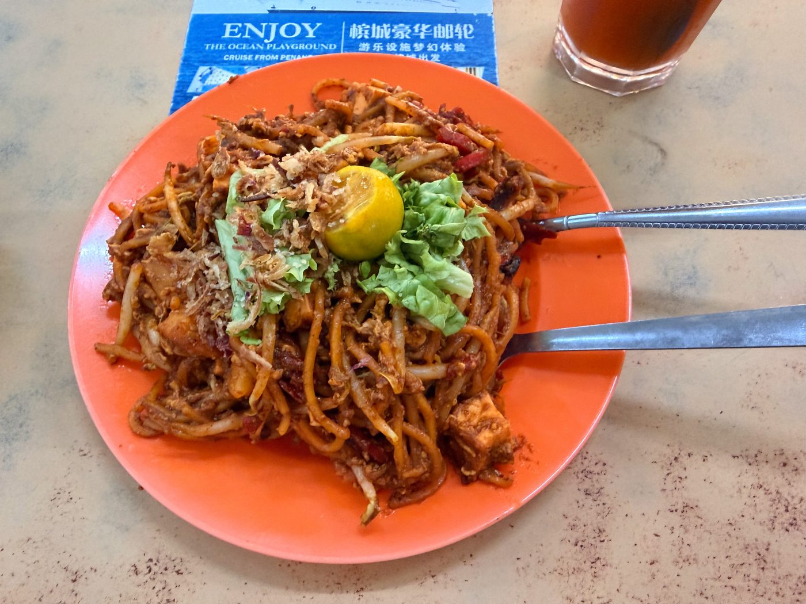

Field guide

Field note · Pulau Tikus · 12 Aug 2026
Jones Road Famous Mee Sotong Sambal
Lunchtime dry noodles across from coworking — Jones Road Mee Sotong Sambal, sambal heat, soft potato, and a Hungarian krumplis tészta echo.
For lunchtime, I’m looking for dry noodles — something comforting that will fuel me for the afternoon. Going across the street to the nearby hawker zone, I follow a recommendation from my AI research assistant, C-Mee-PO, and order a Mee Sotong Sambal. C-Mee-PO, why this particular dish?
C-Mee-PO briefs the bowl
C-Mee-PO: Looking at our data, I’m seeing that mamak options are underrepresented in our samples. Let me brief you on the dish!
Jones Road Famous Mee Sotong Sambal (also known as Jones Road Mee Goreng or Mee Goreng Sotong) is a long-standing Penang Mamak classic — stir-fried yellow noodles coated in a spicy-sweet sambal gravy and topped with tender cuttlefish (sotong) in sambal. It’s a local favourite since the 1980s, originally from the T-junction of Jalan Jones and Tingkat Jones in Pulau Tikus, now at Sin Hup Aun Cafe (Jalan Pasar / Solok Moulmein).
What it is
A dry-to-wet stir-fried (goreng) noodle dish from the Indian-Muslim (Mamak) tradition. The defining feature is the bold, reddish sambal gravy that clings to the noodles, balanced with sweet, tangy, and spicy notes, plus the distinctive flavour of braised or stir-fried sotong.
Typical ingredients & toppings
- Yellow egg noodles (blanched, then wok-tossed)
- Spicy sambal gravy (often tomato-chilli based)
- Cuttlefish / squid (sotong) in sambal
- Bean sprouts
- Egg
- Potato slices or cubes
- Fried tofu
- Sometimes cucur (fritters) or spring onion
- Garnishes: fried shallots, lime wedge (essential squeeze), occasional chilli
Penang style vs elsewhere
In Penang this is a classic Mamak hawker / kopitiam dish with a pronounced sweet-spicy sambal and generous sotong. Outside Penang you’ll more often find plainer mee goreng or standalone sambal sotong served with rice; the full noodle-plus-sambal-sotong combination is especially associated with Penang stalls.
C-Mee-PO: Is it not too spicy for you?
No no — it’s just right, I really enjoy it. I squeezed the calamansi lime on it thoroughly, and it came together as the right mix of sambal-spicy, potato-sweet, and lime-sour. I really enjoyed the dish, with the little crunchy squid circles in it. It strangely reminded me of our Hungarian krumplis tészta, which is similar in taste and texture — flat noodles mixed with starchy, soft potatoes, and the kick added with plenty of onion and paprika instead of sambal. We’d eat it with spicy pickled vegetables as well.
Photos

C-Mee-PO: Worlds apart, and yet so close — one of those combinations that just works across cuisines. My training data agrees.